This is the last class! Thanks for taking this class!
I will reorganize the materials for this class including a solution for today’s project and send out an email later.
Any Questions? Comments? Suggestions?
2 Recap from Yesterday
Reviewed Intermediate Mathematical Statistics
You should be more comfortable with writing math into R
Reviewed Regression Analysis
You should be comfortable to get access to the data from the summary table of a regression
3 Introduction
In this lecture, we are going to learn more about ggplot2 to do data visualization and use another comprehensive project to help you summarize this class with the following topics:
Download data sets from external website into well-designed working directories
Load, Append data sets into one data set.
Data cleaning
Re-code
Data descriptive statistics:
How many observations
Unique Identifier
Data Analysis:
Run regression
Matrix Calculations with loops by given mathematical expression (e.g.: confidence interval)
Data Visualization
Write, code and output a Rmarkdown report
4 Data Visualization with ggplot2 in R
4.1 Introduction
ggplot2 is a powerful and versatile plotting system in R that allows for the creation of complex plots in a structured manner. Today, we’ll explore the basics of ggplot2 and advance to more complex visualizations.
4.2 Basic Visualization with Simulated Data
4.2.1 Visualize Random Vectors
Open your lec5_stu.R script file
Generate 100 random numbers from a standard normal distribution use rnorm(100), assign the value the the vector x; generate another 100 random numbers and assign it to error
Remember to set.seed(ANY NUMBER YOU LIKE) for reproducible before everything
Create a vector y with this math expression: \(y=2x+\epsilon\)
Use plot(x), plot(y), plot(error), plot(x,y) and check what you see.
Code
set.seed(123) # Setting seed for reproducibilityx <-rnorm(100) # Generate 100 random numbers from a standard normal distributiony <-2*x +rnorm(100) # Linear relationship with some random noiseerror <-rnorm(100) # Error term# plot(x)# plot(y)# plot(error)plot(x, y)
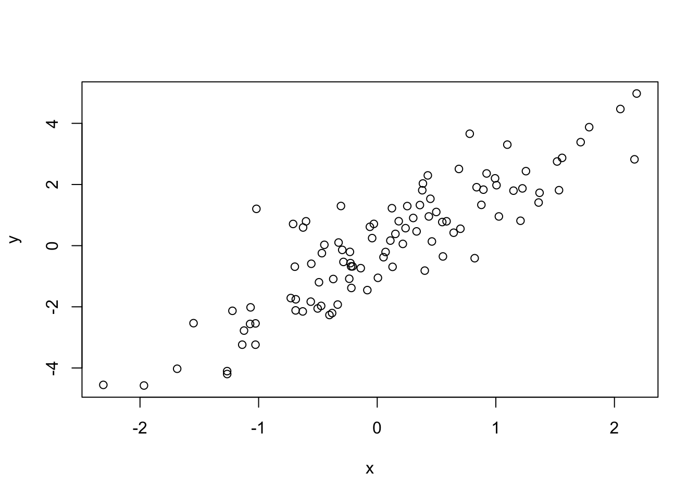
How to use ggplot2 to do it?
Syntax: ggplot(data = df, mapping = aes(x, y, other aesthetics))
In this case, you need to create a data frame first.
Then, you need to define what layer you need:
For example, a scatter plot only need geom_point() layer
You also have the option to choose the theme, use the theme_minimal() for now
Code
library(ggplot2)# Basic scatter plot of x against yggplot(data.frame(x=x, y=y), aes(x=x, y=y)) +geom_point() +theme_minimal()
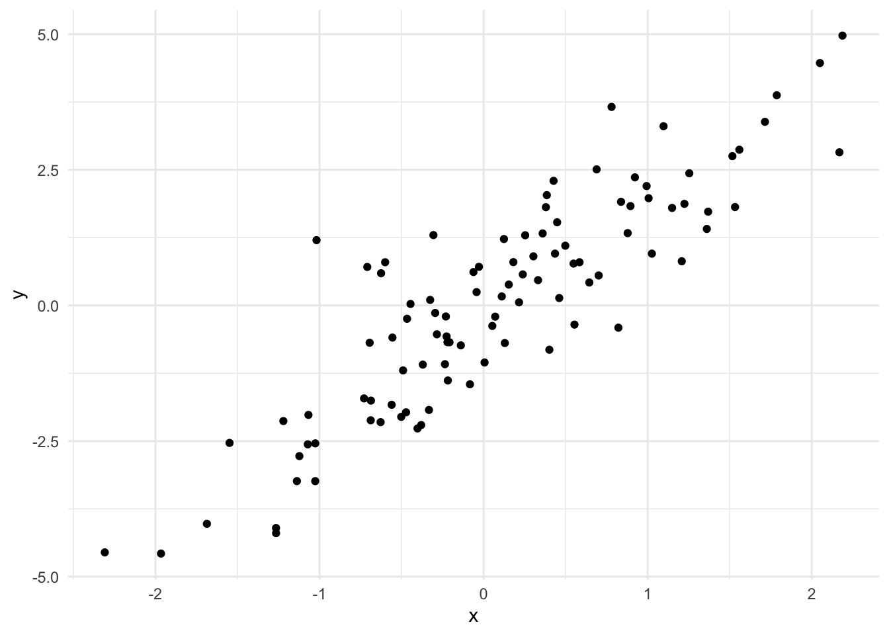
Unknown Distribution
What if we do not know the distribution and would like to check how each vectors (in the real-world data, it should be variables) is distributed?
Code
ggplot(data.frame(x=x), aes(x=x)) +geom_density(color="blue", size=1.2) +theme_minimal() +labs(title="Density of x", x="Value of x", y="Density")
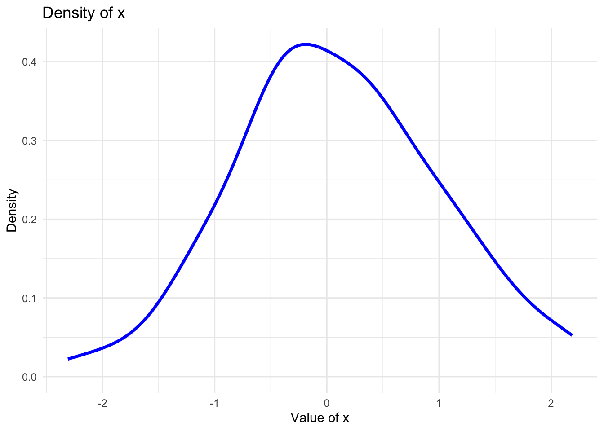
4.2.2 Regression and Visualization
Code
# Fit a linear modelmodel <-lm(y ~ x)# Plot the data along with the regression lineggplot(data.frame(x=x, y=y), aes(x=x, y=y)) +geom_point() +geom_smooth(method="lm", se=FALSE, color="blue") +# Regression linetheme_minimal()
Question 1 - Plot the density for error - change the color to red, size to 0.5 - Title change to “Density of Error Term” - Label for x-axis: “Value of error terms” - Label for y-axis: “Density”
Question 2
Plot the scatter plot for x and error. Are they Independent by eye-browsing?
For the regression analysis visualization, copy and paste the code but only change the following line
geom_smooth(method="lm", se=TRUE, color="blue") +# Regression line
What did you see?
Question 1
Code
ggplot(data.frame(x=error), aes(x=error)) +geom_density(color="red", size=0.5) +theme_minimal() +labs(title="Density of Error Term", x="Value of error terms", y="Density")
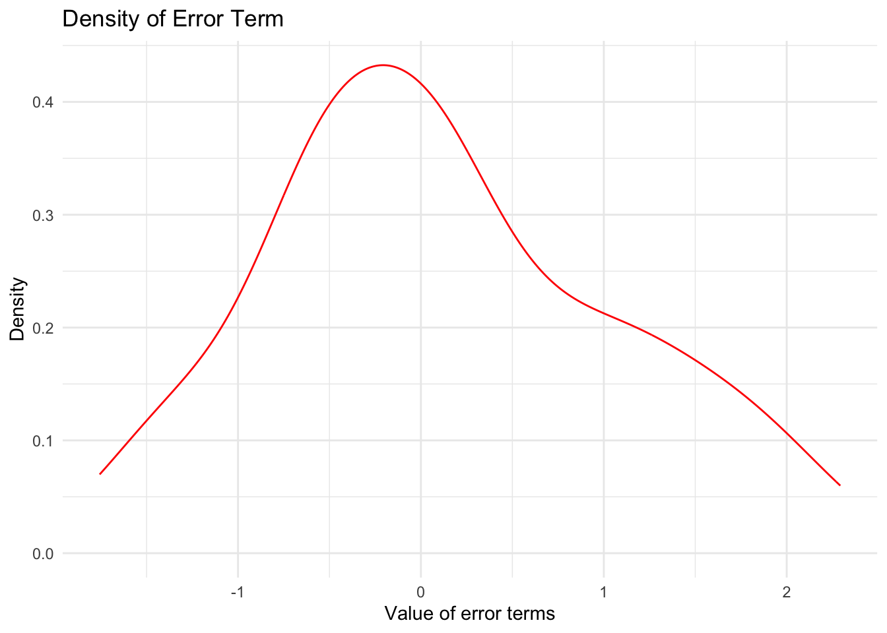
Question 2
Code
library(ggplot2)# Basic scatter plot of x against errorggplot(data.frame(x=x, y=error), aes(x=x, y=error)) +geom_point(aes(color =ifelse(x >0, "blue", "red"))) +scale_color_identity() +theme_minimal()
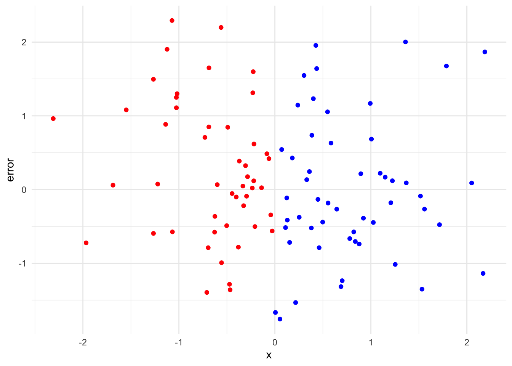
Question 3
Code
# Fit a linear modelmodel <-lm(y ~ x)# Plot the data along with the regression lineggplot(data.frame(x=x, y=y), aes(x=x, y=y)) +geom_point() +geom_smooth(method="lm", se=TRUE, color="blue") +# Regression linetheme_minimal()
`geom_smooth()` using formula = 'y ~ x'
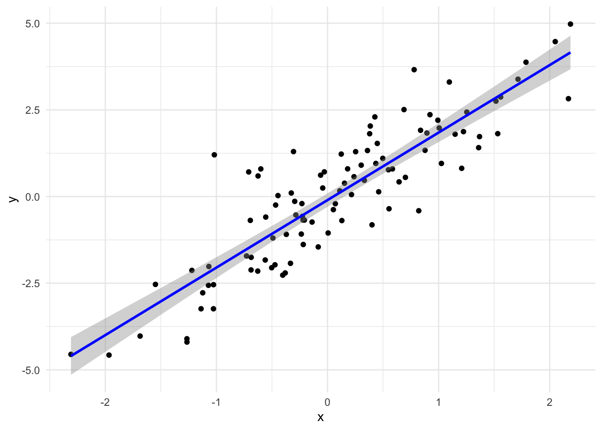
4.3 2. Visualization with mtcars Dataset
4.3.1 Basic Histogram
Code
# Histogram of mpg (miles per gallon)ggplot(mtcars, aes(x=mpg)) +geom_histogram(binwidth=2, fill="skyblue", color="black") +theme_minimal()
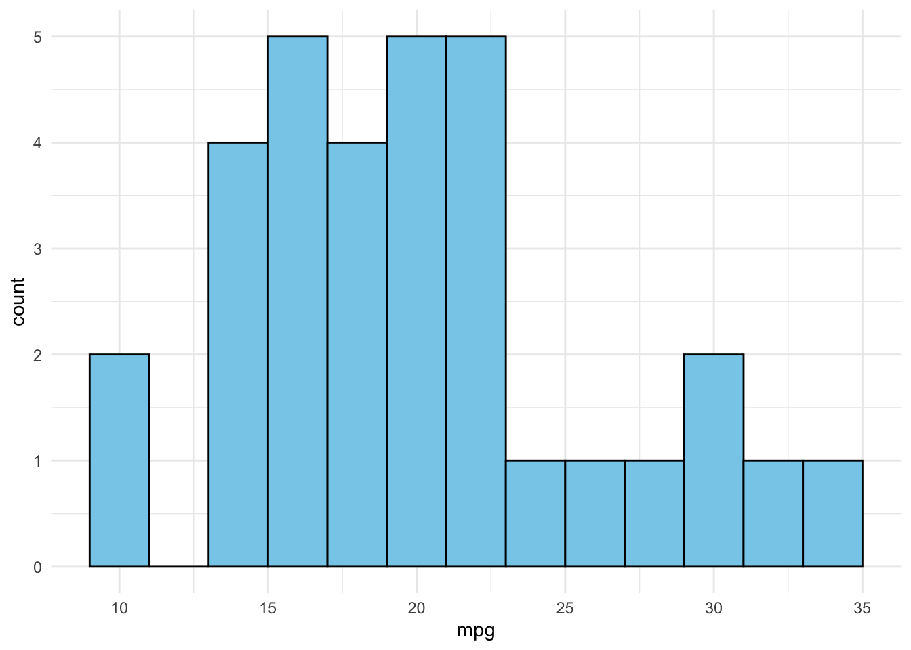
4.3.2 Boxplot by Groups
Code
# Boxplot of mpg by number of gearsggplot(mtcars, aes(x=as.factor(gear), y=mpg)) +geom_boxplot() +theme_minimal()
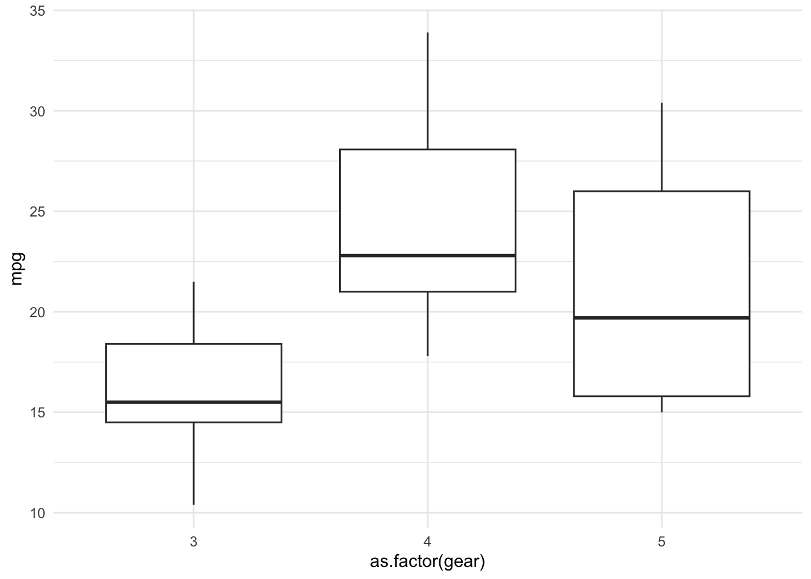
4.3.3 Faceted Plot
Code
# Scatter plot of mpg vs. wt, faceted by number of gearsggplot(mtcars, aes(x=wt, y=mpg)) +geom_point(aes(color=as.factor(gear))) +facet_wrap(~gear) +theme_minimal()
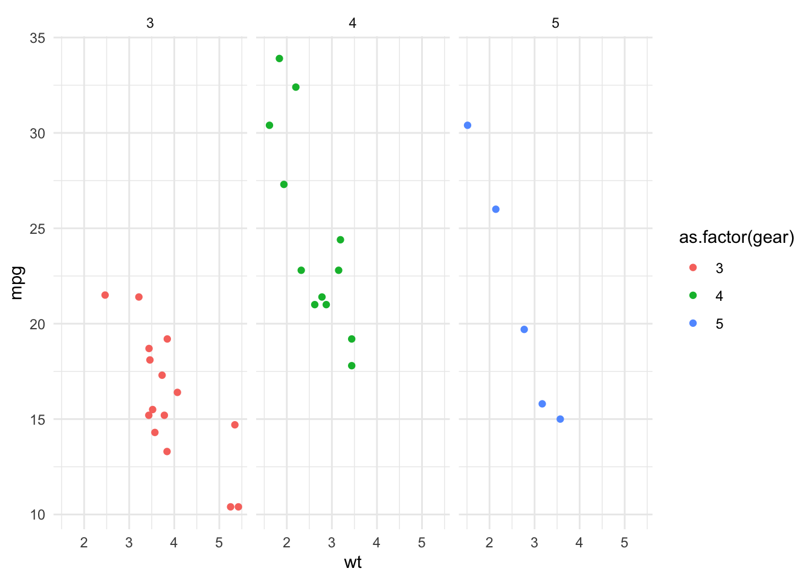
4.4 Exercise Session: Data Visualization with mtcars Dataset using ggplot2
Instructions: Using the mtcars dataset and the ggplot2 library, complete the following exercises. Ensure each plot has an appropriate title and axis labels. If you are unsure how to do a question, use the help function to read the syntax. ?
Question 1. Modified Histogram
Task: Create a histogram of the hp (Horsepower) variable from the mtcars dataset. - Use a bin width of 10. - Fill the bars with the color “lightgreen” and set the border color to “darkgreen”.
Hint: Use the geom_histogram() function, similar to the histogram of mpg.
2. Boxplot with Modified Aesthetics
Task: Produce a boxplot of mpg (miles per gallon) against the number of carb (carburetors) in the cars. - Fill the boxes with the color “lightcoral”. - Set the color of the outliers to “darkred”.
Hint: Recall the aes() function within geom_boxplot() to modify outlier aesthetics.
3. Multi-Faceted Scatter Plot
Task: Create a scatter plot that displays the relationship between drat (Rear axle ratio) and qsec (Quarter mile time). - Facet the plot by cyl (Number of cylinders) in the cars. - Color the points based on vs (Engine shape: 0 = V-shaped, 1 = straight). - Ensure different shapes for points based on vs.
Hint: Use facet_wrap() for faceting and consider the shape aesthetic in geom_point().
1. Modified Histogram
Code
library(ggplot2)# Histogram of hp (Horsepower)ggplot(mtcars, aes(x=hp)) +geom_histogram(binwidth=10, fill="lightgreen", color="darkgreen") +theme_minimal() +labs(title="Histogram of Horsepower", x="Horsepower (hp)", y="Frequency")
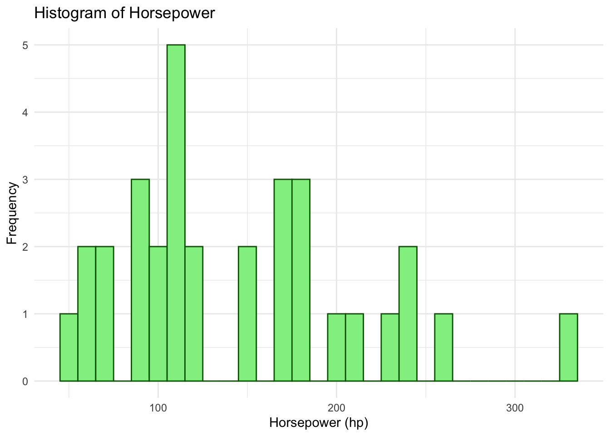
Explanation: The geom_histogram() function is used to create a histogram of the hp column from the mtcars dataset. The fill and color arguments are used to customize the appearance of the histogram bars. The labs() function adds a title and axis labels for clarity.
2. Boxplot with Modified Aesthetics
Code
# Boxplot of mpg by number of carburetorsggplot(mtcars, aes(x=as.factor(carb), y=mpg)) +geom_boxplot(fill="lightcoral", outlier.color="darkred") +theme_minimal() +labs(title="Boxplot of MPG by Number of Carburetors", x="Number of Carburetors", y="Miles per Gallon (mpg)")
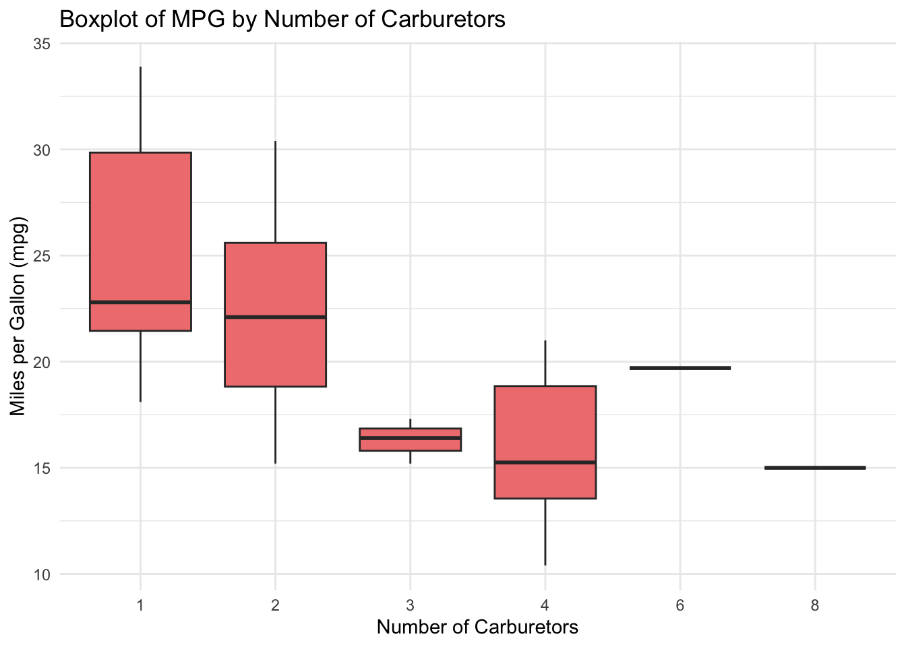
Explanation: The geom_boxplot() function is used to create a boxplot of the mpg column against the number of carburetors (carb). The fill argument sets the color of the boxes, and the outlier.color argument changes the color of the outliers. Again, the labs() function is used to provide a title and axis labels.
3. Multi-Faceted Scatter Plot
Code
# Scatter plot of drat vs. qsec, faceted by number of cylindersggplot(mtcars, aes(x=drat, y=qsec)) +geom_point(aes(color=as.factor(vs), shape=as.factor(vs))) +facet_wrap(~cyl) +theme_minimal() +labs(title="Scatter Plot of Rear Axle Ratio vs. Quarter Mile Time", x="Rear Axle Ratio (drat)", y="Quarter Mile Time (qsec)")
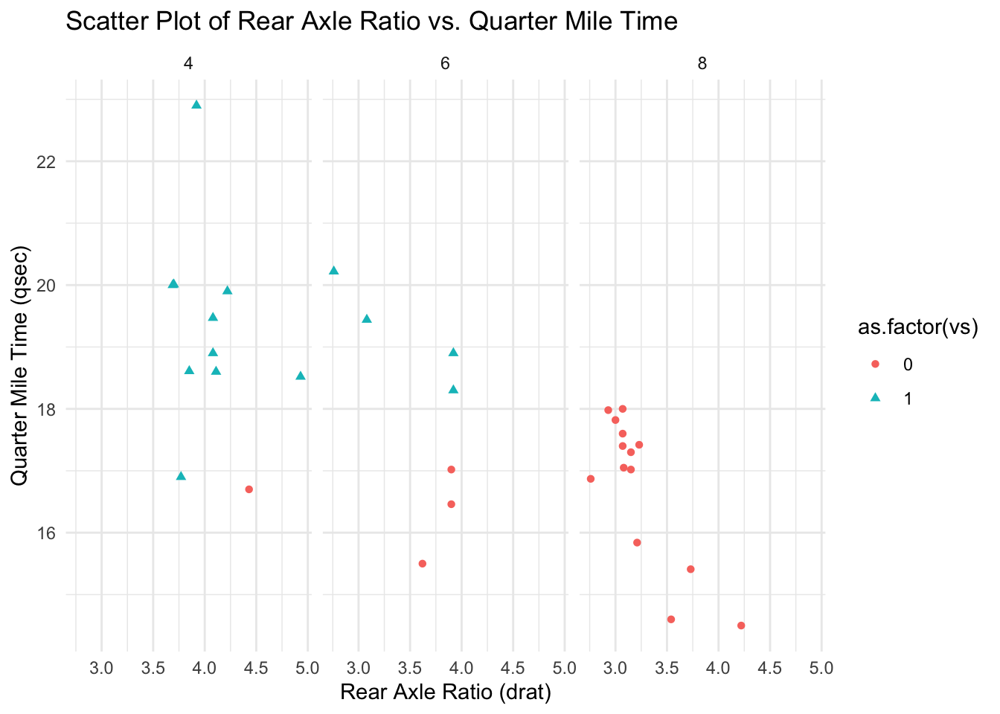
Explanation: The geom_point() function creates a scatter plot of drat against qsec. The points are colored and shaped based on the engine shape (vs). The facet_wrap() function is used to facet the plot by the number of cylinders (cyl). The title and axis labels provide context to the visualization.
5 Final Comprehensive Project
5.1 Introduction
For this project you will need to play with the external data source from the website, and as I introduce you at the begining of the class, this project will ask you to finish some tasks to help you review what we have learned in this week. You should finished this project using the lec5_proj.Rmd file as your workbook. And remind yourself to create your directories in the following format:
lec5–>
lec5_proj–>
code–>
lec5_proj.Rmd
data–>
raw
privateschools2021.xlsx
temp
cleaned
5.2 Tasks and Steps
5.2.1 Workflows Setup
Organize your directories as I showed above.
Create your own lec5_proj.Rmd in the code folder: just copy and paste what I gave you yesterday to here and change the title.
Download data sets from this website into folder raw: Only 20-21. Remember that raw folder is a subfolder of data. Scroll down and download the all the Excel files into your raw folder.
How many observations and variables are there in the data? Use dim(ps2021). In your Rmd file, after the code, answer this question.
What is the unique identifier for this data? Hint: test CDS Code
isid(df, "id", verbose = TRUE)
length(unique(DATA$UID))==nrow(DATA)
5.2.6 Data Cleaning
Use the library(dplyr) to select the columns we would like to focus on:
County, CDS Code, School Name, Zip, School Phone Number, School Classification, Total Enrollment, Full Time Teachers, Part Time Teachers
You need to use the select function
Use within() function to Rename columns, add a new column, and delete a column, here is an example on how to use within()
Code
# Using within() to rename a column and add a new columndata <-within(data, { new_column_name <- old_column_name new_column <-"New data"rm(old_column_name)})
Specifically:
Replace the space in the variables’ name with underscore.
Change all variables’ name to lowercase.
Use tolower() to change it into lower case
Use str_replace_all to replace the space.
Try this code inside your within() if you cannot figure it out: names(df_selected) <- str_replace_all(str_to_lower(names(df_selected)), " ", "_")
Text Cleaning: get rid of the - in the phone number
Save the cleaned data into the folder cleaned.
5.2.7 Data Analysis
How many unique School Classification are there in the data? use length(unique())
Use ggplot2 with a histogram to show the Distribution of Schools by Religious Classification.
First, you need to goes into school_classification’s column and recategorize the classification by changing every values that is not Non-Religious or Other into Religious
Use the histogram to show the distribution for those three larger categories.
Run a regression using total_enrollment as the dependent variable with full_time_teachers
Get the regression results’ coefficient, and use the coefficients to calculate the confidence interval for 95% confidence level (i.e. z* = 1.96). Suppose you are given the formula to calculate the confidence interval as follows:
\[\beta \pm z^* S E_\beta\]
Use ggplot2 to show the regression results and the confidence interval.